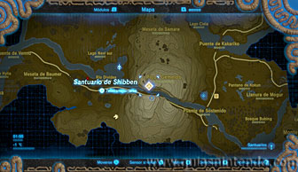
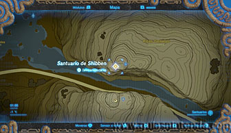
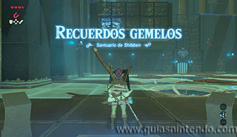
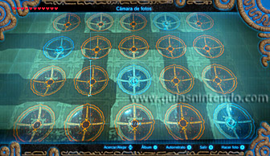
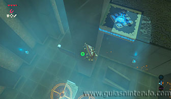
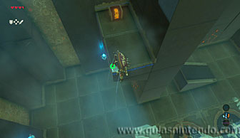
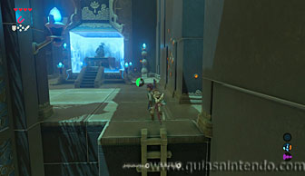

Puedes acceder a este santuario desde que llegas a la región de la torre de Picos Gemelos. Sin embargo, tendrás que llegar primero al Santuario de Niohr, tanto para llegar a su entrada como para completarlo. Para llegar a la entrada puedes saltar con la paravela desde el Santuario gemelo (Niohr) hasta él.

Una vez dentro tendrás que colocar las esferas en sus respectivos agujeros del mismo modo que en el santuario gemelo. El lugar correcto es el que viste en aquel santuario cuando entraste por primera vez. Mira la foto para saber la posición correcta de cada esfera. Ya sabes que cada esfera en un agujero lo pone de color azul.

Antes de ir a la salida puedes coger un cofre (lanza del vigilante). Salta con paravela desde el ascensor y esquiva la columna para alcanzar la plataforma donde se encuentra.

Así llegarás al altar del santuario y podrás examinarlo para obtener un símbolo de valía.
